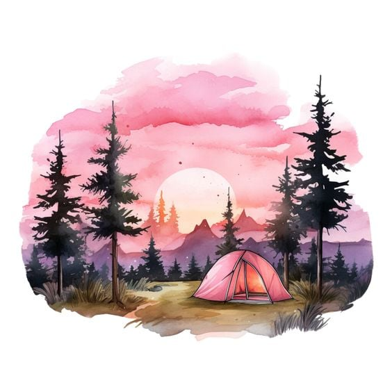

UPDATE: páteční přípravy na pařbu se zatím ladí. Budeme informovat.
Svatba se koná 5.10.2024 ve 13:00 ve Vrchlabí na zámečku. After párty pak kde jinde než na Kozlovi.
Ubytování na Kozlovi zajištěno s místním šerifem Pančusem, kterého všichni znáte. A protože Krkonoše budou nadosah, tak kdo by si rád vyšlápl na nějaký ten kopec, tesinsky či pohorky sebou a nezapomenout batůžek na sváču a pláštěnku
Check-in na kozla buď v pátek, nebo v sobotu...případně dle domluvi s Pančusem
Co se týče svatby, tak v sobotu sraz u zámečku ve 12:45. Ženich, nevěsta a oba svědkové budou ještě před zahájením obřadu ukazovat občanky, tak ji nezapomenout!
Parkování je možné přímo u zámečku a protože to bude VIP akce, tak se může i do areálu zámečku, zákazy nezákazy
ve 13:00 začíná již samotný obřad. Pokud nevěsta nebo ženich teda nevemou roha.
Po obřadu budeme rádi za společné foto u zámečku
Poté se můžeme přesunout na Kozla, kde si dáme nějaký ten dlabanec následovaný volnou zábavou
protože je svatba spíš neformální, tak se těšíme, že vás všechny uvidíme, pokecáme a trochu to zapijeme. V případě dobrého počasí rádi pogrilujeme. Mladší děti určitě ocení dětské hřiště, pro starší ... je tam Wi-Fi
